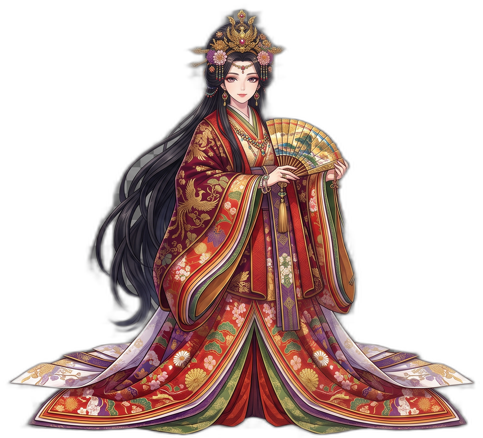
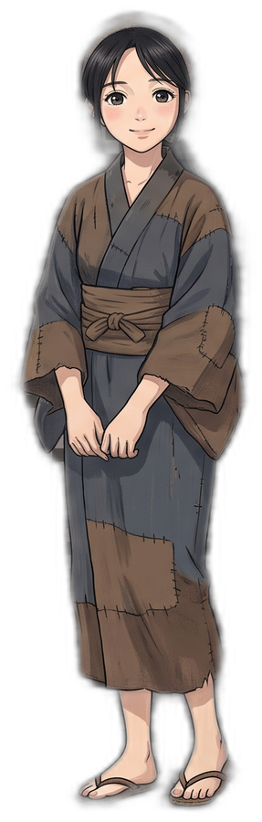
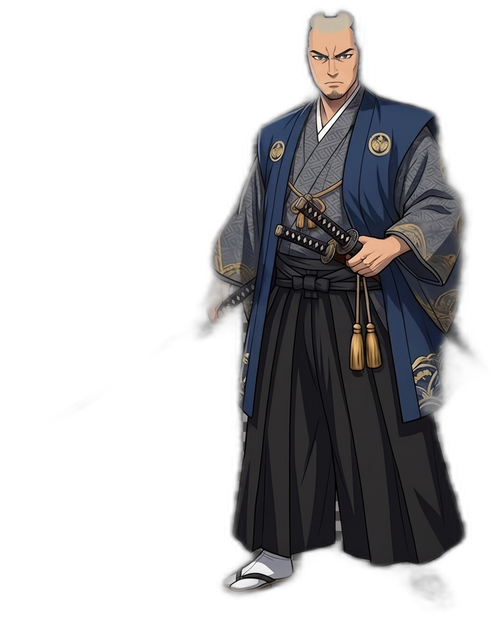
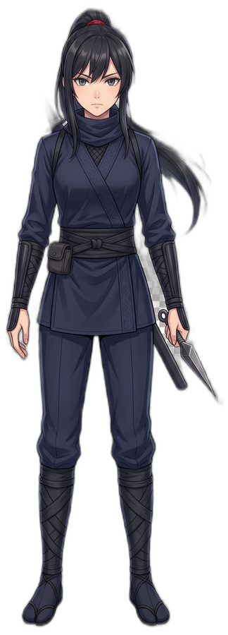

The characters guiding you through Japan in 60, Untranslatable Japan, and our Instagram Reels.
A Japanese woman living in Edo. Knowledgeable and sharp, she's the one explaining everything to Ardios as he travels.
Personality: Extremely knowledgeable.
A traveler from France who doesn't know much about Japan yet — so Yukise Miyu is teaching him everything, one custom at a time.
Personality: Endlessly curious, generous.

A woman of imperial blood who took Maiko in and is training her for a life at court.
Personality: Generous — but won't let Maiko out of her sight.

A village girl from rural Japan. After her home was burned down by Shurasai, Kurenai-hime found her grieving and took her in.
Personality: Full of questions, still in training.

A corrupt official who's burned down more than one village. He's after Kurenai-hime, though she always sends him packing — and he's not without a soft side, having taken Osaki under his wing.
Personality: Secretly a good person.

A kunoichi in Shurasai's service, and once Kurenai-hime's own attendant — until she was let go and Shurasai took her in.
Personality: Devoted to a fault. A little foolish.
New episodes across YouTube, TikTok, and Instagram — one story at a time.